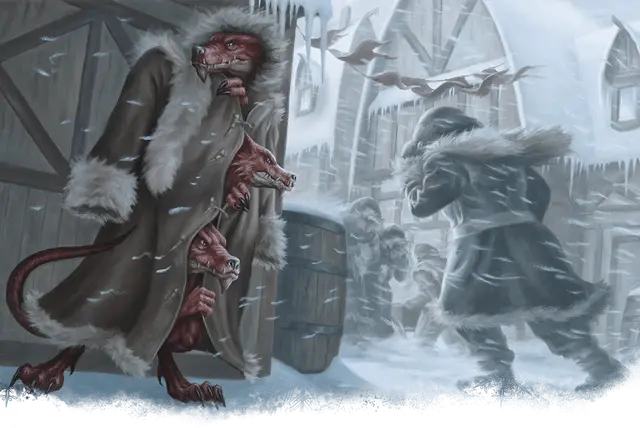

Кобольд долины Ледяного Ветра
Icewind Kobold
Маленький Гуманоид (Кобольд), любое мировоззрение

Класс Доспеха 14 (шкурный доспех)
Хиты 9 (2к6 + 2)
Скорость 30 футов, лазая 20 футов
| мод | спас | ||
|---|---|---|---|
| СИЛ | 7 | −2 | −2 |
| ЛОВ | 15 | +2 | +4 |
| ТЕЛ | 12 | +1 | +3 |
| мод | спас | ||
|---|---|---|---|
| ИНТ | 8 | −1 | −1 |
| МДР | 8 | −1 | −1 |
| ХАР | 8 | −1 | −1 |
Навыки Восприятие +1, Выживание +1, Скрытность +4
Чувства тёмное зрение 60 футов, пассивное Восприятие 11
Языки Общий, Драконий
Опасность 1/8 (25 опыта)
Бонус мастерства +2
Особенности
Тактика стаи. Кобольд совершает с преимуществом броски атаки по существу, если в пределах 5 футов от этого существа находится как минимум один дееспособный союзник кобольда.
Чувствительность к солнечному свету. Находясь на солнечном свету, кобольд совершает броски атаки с помехой, а также проверки Мудрости (Восприятие), полагающиеся на зрение.
Действия
Кинжал. Рукопашная или дальнобойная атака оружием: +4 к попаданию, досягаемость 5 футов или дистанция 20/60 футов, одна цель. Попадание: 4 (1к4 + 2) колющего урона.
Метательное копьё. . Рукопашная или дальнобойная атака оружием: +0 к попаданию, досягаемость 5 футов или дистанция 30/120 футов, одна цель. Попадание: 1 (1к6 – 2) колющего урона.
Описание
Кобольдов, всегда можно найти там где обитают драконы, а те, что живут в горах и холмах долины Ледяного Ветра, являются одними из самых выносливых представителей своего вида. Привлеченные на север желанием найти белых драконов и служить им, эти кобольды наиболее приспособились к враждебному климату севера. Их чувствительные глаза предпочитают тусклые дни без солнца и долгие темные ночи. Они используют деревянные копья, чтобы проверять снег на своем пути.
Живущие в долине Ледяного Ветра кобольды часто забредают в Десять Городов, спасаясь от ужасного холода в надежде обменять свои немногочисленные умения на теплый суп и кров. Жители Десяти Городов, привыкшие к присутствию чужеземцев, обычно позволяют кобольдам находиться рядом. Когда кобольды не чувствуют себя в безопасности, они надевают тяжелую зимнюю одежду и маскируются под людей, стоя друг у друга на плечах. Три кобольда в теплой одежде могут выдать себя за неуклюжего человека успешной групповой проверкой Харизмы (Обман), Сл которой равна результату проверки Мудрости (Проницательность) наблюдающего за ними.